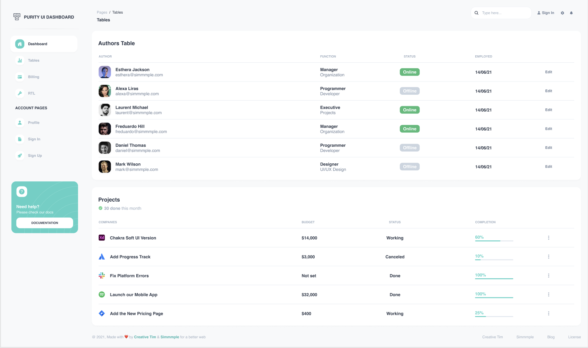

บทเรียน 11 · สร้าง UI ด้วย Cursor Agent (Building with the Agent)
หน้า Tables และ Sign Up
Tables & Sign Up Pages
บทนี้จะใช้ขั้นตอนเดิมสร้างสองหน้าในบทเดียว ตอนนี้เราฝึกอ่าน UI ในบท 06 เขียน prompt ในบท 07 และเห็นขั้นตอนทำงานของ Agent ในบท 09–10 แล้ว จึงทำแต่ละรอบได้กระชับขึ้น
Part 1 — หน้า Tables
🎯 เป้าหมาย

- Route
/tablesrender ใน DashboardLayout เดิม (shell ใช้ร่วม — ไม่ต้องสร้างใหม่) - การ์ดตาราง Authors: avatar + ชื่อ + อีเมล, ตำแหน่งสองบรรทัด, badge Online/Offline, วันที่, ลิงก์ Edit — 6 แถว
- การ์ดตาราง Projects: ไอคอน + ชื่อ, งบ, สถานะ, % + progress bar — 5 แถว
- เมนู Tables ใน sidebar พาไปหน้านี้ได้จริง
📝 เขียน Prompt
คุณ decompose หน้านี้ไว้แล้วเป็นแบบฝึกของบทเรียน 06 — ลองเขียน prompt เองก่อน แล้วค่อยเทียบกับเฉลยนี้
สร้างหน้า Tables ใน src/pages/TablesPage.tsx ตาม screenshot ที่แนบมา
บริบท: shell และ router มีแล้ว หน้านี้เป็น child route ของ DashboardLayout ที่ path "/tables"
ใช้ design tokens เดิม (primary, ink, muted, success, ...)
โครงสร้าง (2 การ์ดเรียงลงมา ห่าง gap-6):
- การ์ด "Authors Table": คอลัมน์ AUTHOR / FUNCTION / STATUS / EMPLOYED / (ช่องว่างสำหรับ Edit)
6 แถว: Esthera Jackson esthera@simmmple.com (Manager, Organization, Online, 14/06/21) /
Alexa Liras alexa@simmmple.com (Programmer, Developer, Offline, 14/06/21) /
Laurent Michael laurent@simmmple.com (Executive, Projects, Online, 14/06/21) /
Freduardo Hill freduardo@simmmple.com (Manager, Organization, Online, 14/06/21) /
Daniel Thomas daniel@simmmple.com (Programmer, Developer, Offline, 14/06/21) /
Mark Wilson mark@simmmple.com (Designer, UI/UX Design, Offline, 14/06/21)
— AUTHOR คือรูป avatar สี่เหลี่ยมมุมโค้ง + ชื่อตัวหนา + อีเมลสีเทา;
STATUS คือ badge: Online พื้นเขียว (success) ตัวขาว, Offline พื้นเทาอ่อนตัวเทา;
ท้ายแถวมีลิงก์ Edit สีเทา
- การ์ด "Projects" หัวข้อรอง "30 done this month": คอลัมน์ COMPANIES / BUDGET / STATUS /
COMPLETION / (kebab menu) 5 แถว: Chakra Soft UI Version $14,000 Working 60% /
Add Progress Track $3,000 Canceled 10% / Fix Platform Errors Not set Done 100% /
Launch our Mobile App $32,000 Done 100% / Add the New Pricing Page $400 Working 25%
— COMPLETION คือตัวเลข % สีเขียวมิ้นต์ + progress bar
ข้อกำหนดทางเทคนิค:
- Tailwind เท่านั้น; ตารางเป็น <table> จริง; การ์ด rounded-2xl bg-white shadow-sm
- mock data: src/data/authors.ts — avatar ใช้ https://i.pravatar.cc/150?img=<เลข>
- เพิ่ม route "/tables" ใน router.tsx และทำให้เมนู Tables ใน sidebar ชี้มาหน้านี้
ขอบเขต: ไม่แก้หน้า Dashboard ไม่ทำ sorting/filtering จริง (UI นิ่ง ๆ)
🤖 สิ่งที่ Agent สร้าง
ตัวอย่างหนึ่งแถวของ Authors — จุดที่น่าดูคือ badge
// src/pages/TablesPage.tsx (ส่วนหนึ่ง)
<tr className="border-b border-gray-100">
<td className="py-4">
<div className="flex items-center gap-3">
<img src={author.avatar} alt={author.name} className="size-10 rounded-xl" />
<div>
<p className="text-sm font-bold text-ink">{author.name}</p>
<p className="text-sm text-muted">{author.email}</p>
</div>
</div>
</td>
<td>
<p className="text-sm font-bold text-ink">{author.role}</p>
<p className="text-sm text-muted">{author.dept}</p>
</td>
<td>
<span
className={
author.online
? "rounded-lg bg-success px-3 py-1 text-xs font-bold text-white"
: "rounded-lg bg-gray-100 px-3 py-1 text-xs font-bold text-muted"
}
>
{author.online ? "Online" : "Offline"}
</span>
</td>
<td className="text-sm font-bold text-ink">{author.employed}</td>
<td>
<a href="#" className="text-sm font-bold text-muted">Edit</a>
</td>
</tr>
Badge ทำงานถูก แต่ใน className มี ternary ที่เขียน class ชุดเดิม (rounded-lg px-3 py-1 text-xs font-bold) ซ้ำทั้งสองฝั่ง วิธีนี้ยังใช้ได้ แต่ถ้าพบหลายจุดจะดูแลยากขึ้น เราจะนำตัวอย่างนี้ไป review ในบทเรียน 14 และแยกเป็น component StatusBadge ในบทเรียน 15 ส่วน progress bar ในตาราง Projects ก็ซ้ำกับของบทเรียน 10 ข้ามหน้าแล้ว
Part 2 — หน้า Sign Up
🎯 เป้าหมาย

- Route
/signup— อยู่นอก DashboardLayout: หน้านี้ไม่มี sidebar ไม่มี navbar ของ dashboard แต่มี navbar ใสของตัวเองลอยบน hero - Hero ไล่เฉดเขียวมิ้นต์ + หัวข้อ "Welcome!" + ข้อความรอง
- การ์ดฟอร์มลอยเหลื่อมออกมาจาก hero: หัวข้อ "Register with", ปุ่ม social 3 ปุ่ม (Facebook, Apple, Google), ตัวคั่น "or", ช่อง Name / Email / Password, สวิตช์ "Remember me", ปุ่ม SIGN UP, ลิงก์ "Already have an account? Sign in"
📝 เขียน Prompt
นี่คือแนวคำตอบของแบบฝึกท้ายบทเรียน 08 ลองเทียบกับ prompt ที่คุณเขียนไว้ จุดสำคัญคือการระบุเรื่อง "ไม่มี sidebar" ให้ครบทั้งด้านโครงสร้าง ซึ่งใช้ navbar ของหน้านี้เอง และด้าน router ซึ่งต้องวาง route ไว้นอก layout
สร้างหน้า Sign Up ใน src/pages/SignUpPage.tsx ตาม screenshot ที่แนบมา
บริบท: โปรเจกต์เดิม (tokens: primary, primary-dark, ink, muted) — แต่หน้านี้ไม่ใช่ส่วนของ
dashboard: ไม่มี sidebar ไม่ใช้ DashboardLayout
โครงสร้าง:
- Hero ส่วนบนของหน้า สูงราว 40vh พื้นไล่เฉดเขียวมิ้นต์ (from-primary to-primary-dark)
มุมล่างโค้ง ภายใน:
- Navbar ลอยตรงกลางความกว้าง: โลโก้ "PURITY UI DASHBOARD" ซ้าย, ลิงก์ DASHBOARD /
PROFILE / SIGN UP / SIGN IN ตรงกลาง (ตัวพิมพ์ใหญ่ ตัวเล็ก ๆ สีขาว), ปุ่มขาวมุมโค้งเต็ม
"Free Download" ขวา
- กลาง hero: หัวข้อ "Welcome!" ตัวหนาใหญ่สีขาว และข้อความรองสองบรรทัด
"Use these awesome forms to login or create new account in your project for free."
- การ์ดฟอร์มสีขาว กว้างราว 28rem จัดกลาง ลอยเหลื่อมขึ้นไปทับขอบล่างของ hero:
- หัวข้อ "Register with" จัดกลาง
- ปุ่ม social 3 ปุ่ม: สี่เหลี่ยมมุมโค้ง ขอบเทา ไอคอน Facebook / Apple / Google
- ตัวคั่น "or" สีเทาจัดกลาง
- ฟอร์ม: label + input ของ Name ("Your full name"), Email ("Your email address"),
Password ("Your password") — input มุมโค้ง ขอบเทาอ่อน
- สวิตช์เปิดปิด "Remember me" (ค่าเริ่มต้นเปิด)
- ปุ่ม SIGN UP เต็มความกว้าง พื้นเขียวมิ้นต์ตัวขาว
- ท้ายการ์ด: "Already have an account?" + ลิงก์ "Sign in" สีเขียวมิ้นต์
ข้อกำหนดทางเทคนิค:
- Tailwind เท่านั้น; ไอคอน social เป็น SVG inline; ทุก input มี label จริง (htmlFor/id)
- เพิ่ม route "/signup" ใน router.tsx แบบ**อยู่นอก** DashboardLayout (route พี่น้องกัน)
- อัปเดตเมนู Sign Up ใน sidebar ให้ลิงก์มาหน้านี้
ขอบเขต: UI เท่านั้น — ยังไม่ต้อง validate, ไม่ต้องต่อ auth, ปุ่มยังไม่ต้องทำงานจริง
Router หลังอัปเดตหน้าตาแบบนี้ (diff เล็ก ๆ แต่แนวคิดสำคัญ: layout เป็นของ route ไม่ใช่ของแอป)
// src/app/router.tsx
export const router = createBrowserRouter([
{
element: <DashboardLayout />,
children: [
{ path: "/", element: <DashboardPage /> },
{ path: "/tables", element: <TablesPage /> },
],
},
{ path: "/signup", element: <SignUpPage /> },
]);
🤖 สิ่งที่ Agent สร้าง
สองจุดที่ควรหยุดดู จุดแรก — ช่อง input ที่ Agent เขียน
<div>
<label htmlFor="email" className="text-sm font-bold text-ink">
Email
</label>
<input
id="email"
type="email"
placeholder="Your email address"
className="mt-2 w-full rounded-xl border border-gray-200 px-4 py-3 text-sm focus:border-primary focus:outline-none"
/>
</div>
สังเกตว่า input ใช้ focus: แทน focus-visible: ซึ่งเหมาะสมแล้ว ตามหลักจากบทเรียน 04 เพราะผู้ใช้ต้องเห็นว่ากำลังพิมพ์อยู่ในช่องใด การเข้าใจหลักช่วยให้เราแยกได้ว่าจุดไหนควรเก็บไว้และจุดไหนต้องแก้
จุดที่สองคือสวิตช์ Remember me ซึ่ง Agent สร้างด้วย <div> + useState + onClick หน้าตาตรงกับดีไซน์และคลิกด้วยเมาส์ได้ แต่ใช้คีย์บอร์ดไม่ได้ และ screen reader ไม่ทราบว่าเป็น checkbox ให้จดเป็น TODO ไว้ก่อน เราจะดูวิธีสร้าง toggle ที่ถูกต้องในบทเรียน 13
🔍 ตรวจทาน (รอบเร็ว)
- จอเล็ก: การ์ด Sign Up ไม่ตกขอบเพราะ container มี
px-4✓ ส่วนตาราง Authors ยังล้นจอ → ใช้ TODO ข้อ 5 เดิม - Tab ผ่านฟอร์ม Sign Up ได้ครบ ✓ แต่ปุ่ม social ไอคอนล้วนไม่มี
aria-label— screen reader อ่านว่า "button" สามปุ่มติดกัน ไม่รู้อันไหนคืออะไร → TODO - สวิตช์ Remember me เป็น div → TODO
TODO (ต่อจากบทเรียน 10)
8. ตาราง Authors ล้นจอมือถือ (พวกเดียวกับข้อ 5)
9. สวิตช์ Remember me เป็น div — คีย์บอร์ด/screen reader ใช้ไม่ได้
10. ปุ่ม social ไอคอนล้วน ไม่มี aria-label
🔧 Refactor
Commit เพื่อเก็บสถานะหลังสร้างหน้าครบ
git add .
git commit -m "feat: tables page + sign up page generated by agent - review pending"
สรุปสถานะก่อนเข้าเฟส Review
- เสร็จแล้ว 3 หน้า: Dashboard, Tables, Sign Up และ app shell — การ generate ช่วยให้เราสร้าง UI ฉบับแรกได้เร็ว
- มี TODO สะสม 10 ข้อ — เป็นรายการที่ต้องจัดการก่อนถือว่างานพร้อมใช้งาน
- หน้า Profile ยังไม่แตะ — เก็บเป็นโจทย์ใหญ่ท้าย workshop (บทเรียน 16)
ช่วงถัดไปจะ review งานผ่านสามด้าน ได้แก่ responsive, accessibility และ maintainability โดยเริ่มจากปัญหาที่สังเกตเห็นบนหน้าจอได้ง่ายที่สุดก่อน